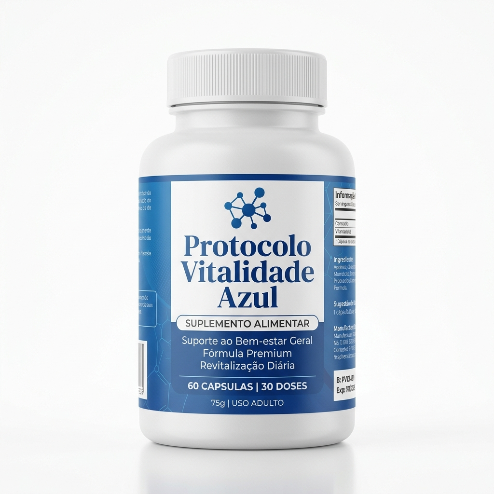

A Ciência Mineral por trás do Equilíbrio Metabólico
Descubra como o estudo do Truque do Sal Azul e a otimização dos minerais podem auxiliar no seu bem-estar e performance diária através de uma metodologia 100% comprovada.
ADQUIRIR PROTOCOLO DIGITAL
✓ Recomendado: Mulheres 40-65+ anos
O Guia Definitivo para sua Revitalização
- Protocolo Passo-a-Passo para equilíbrio mineral
- Guia Digital completo com acesso imediato
- Metodologia baseada em bio-otimização natural
- Material educativo com embasamento científico
Por que o Truque do Sal Azul é Diferente?
📚 Didática Simples
Nossa metodologia digital foi desenhada para ser aplicada por qualquer pessoa, em qualquer lugar.
🔬 Base Científica
O protocolo reúne os estudos mais recentes sobre o impacto dos minerais no metabolismo humano.
📱 Acesso Instantâneo
Receba seu acesso imediatamente após a inscrição e comece a aplicar o protocolo hoje mesmo.